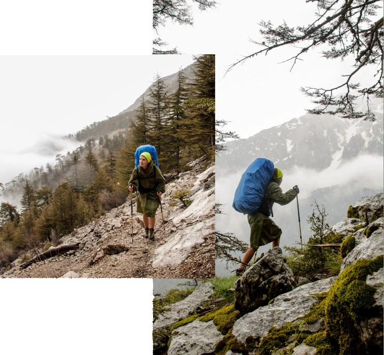
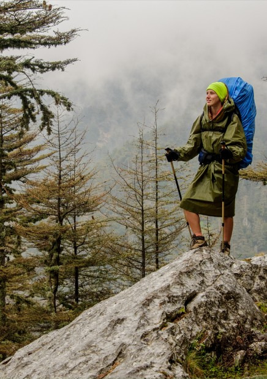
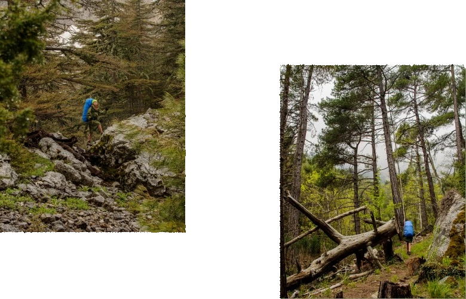
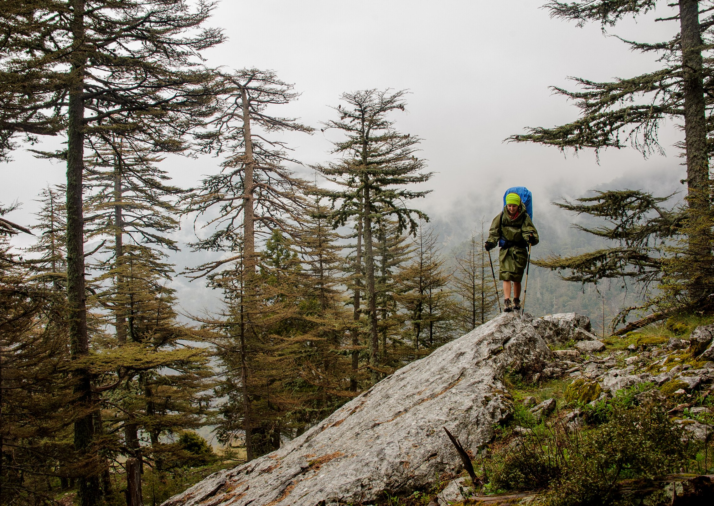
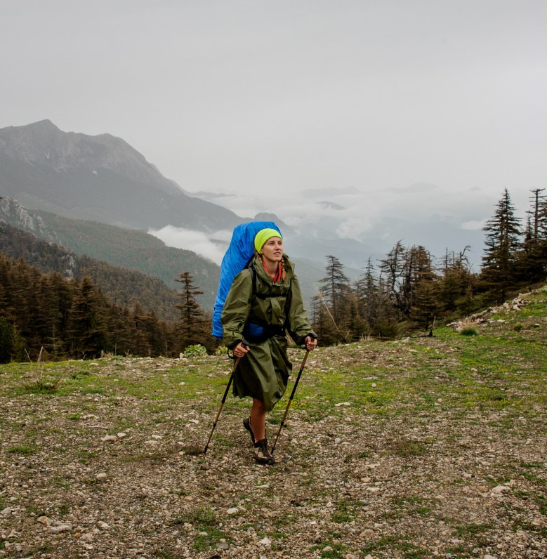

Що таке нордік?
Нордік (скандинавська ходьба) – вид кардіо-тренувань, який виконується зі спеціальними палицями, які дозволяють максимально задіяти не тільки нижню, а й верхню частину вашого тіла.
Для скандинавської ходьби використовують спеціально розроблені палиці, щоб використовувати силу верхньої частини тіла для руху вперед.
Історія скандинавської ходьби
Скандинавська ходьба виникла на початку XX століття у Фінляндії, коли тамтешні лижники хотіли продовжувати тренуватися влітку. Тоді вони залишили лижі, взявши з собою лише палиці.
Справжній прорив скандинавської ходьби як фітнес-активності розпочався в 1997 році, коли фінська компанія у співпраці зі спортсменами та експертами спортивної медицини винайшла нову систему ремінців для зап'ястя, щоб зробити сучасну техніку скандинавської ходьби комфортною та ефективно.


Скандинавська ходьба популярна в розвинених країнах, де люди звикли піклуватися про себе та своє здоров’я.
З 2001 року скандинавська ходьба набула популярності у континентальній Європі з мільйонами постійних учасників. У деяких європейських країнах, таких як Голландія, Австрія та Німеччина, скандинавська ходьба швидко стала основним напрямом діяльності з конкретними журналами, присвяченими цьому, а також одягом, взуттям та, звичайно ж, палицями.

Чому нордік стає популярним?
Сьогодні скандинавською ходьбою цікавиться все більше представників молоді, адже нордік допомагає без виснажливих тренувань підтримувати себе у формі. Це особливо корисно для “офісних” працівників, які мають традиційні проблеми зі спиною та м’язами шиї через “сидячий” образ життя.

Складно зупинитися, коли починаєш виписувати плюси скандинавської ходьби.
Головні:
▪ На відміну від бігу, нордік розвиває все тіло - і руки, і плечі, і корпус, і спину. Під час скандинавської ходьби працюють 90% м’язів.
▪ Це спорт без надриву. Ходьба з палицями відразу приносить радість. Ще б пак: ви гуляєте на свіжому повітрі, отримуючи приємне навантаження на всі великі м'язи організму.
▪ Під час скандинавської ходьби активно працює мозок, дві його півкулі – завдяки виконанню різноманітних вправ – а також відчутно знижується рівень стресу.
▪ Крім того, нордична ходьба відбувається на свіжому повітрі, що вже надзвичайно корисно, а під рукою – жодних ґаджетів, які б відволікали. Ви відпочиваєте.